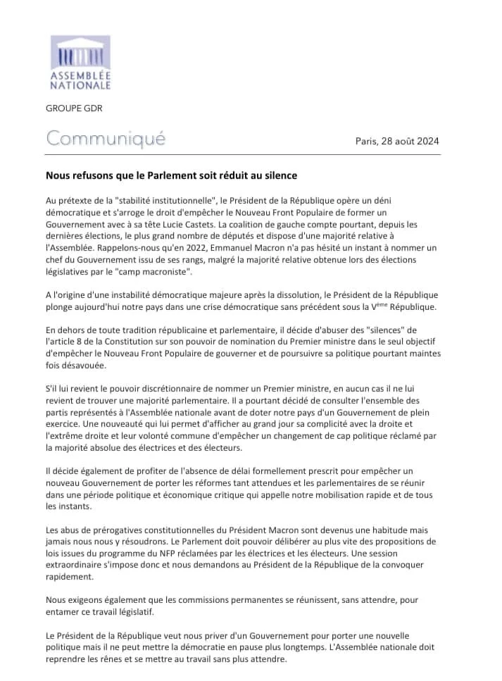

Publication relayée par le PCF 79
Les députés communistes demandent un débat sur les mesures du Nouveau Front populaire
Date de mise à jour indiquée par Facebook · 28 août 2024
Texte de la publication · Les députés communistes
Avec la complicité de la droite et l'extrême droite E.Macron cherche à empêcher à tout prix un changement le cap politique.
Le Parlement doit pouvoir délibérer au plus vite des propositions issues du programme du NFP réclamées par les électrices et les électeurs.

Sources
Les députés communistes · publication relayée par le PCF 79 · bibliothèque Facebook · AR-0002-FB-01305
À lire aussi · Face au budget d’austérité, le PCF propose un pacte d’avenir